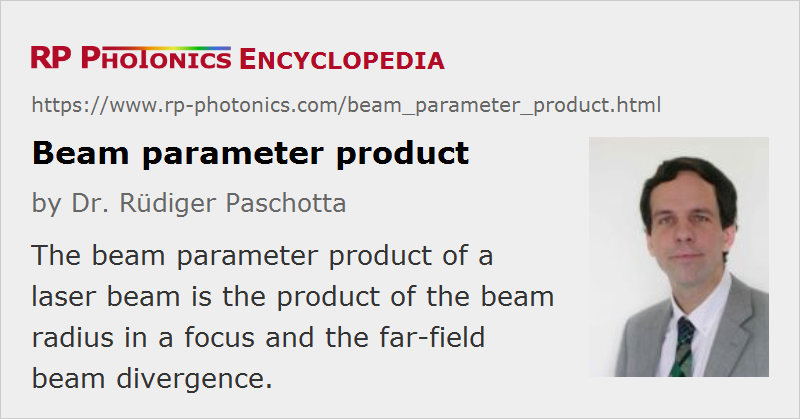

Beam Parameter Product
Acronym: BPP
Definition: product of the beam radius in a focus and the far-field half-angle beam divergence
German: Strahlparameterprodukt
Units: mm · mrad
How to cite the article; suggest additional literature
Author: Dr. Rüdiger Paschotta
The beam parameter product (BPP) of a laser beam is defined as the product of beam radius (measured at the beam waist) and the beam divergence half-angle (measured in the far field). The usual units are mm mrad (millimeters times milliradians). The BPP is often used to specify the beam quality of a laser beam: the higher the beam parameter product, the lower is the beam quality.
The BPP can also be defined for non-Gaussian beams. In that case, second moments should be used for the definitions of beam radius and divergence. The smallest possible beam parameter product is then achieved with a diffraction-limited Gaussian beam; it is λ / π. For example, the minimum beam parameter product of a 1064-nm beam is ≈ 0.339 mm mrad.
For non-circular beams, the BPP can be different e.g. in the vertical and horizontal direction.
Note that the BPP remains unchanged when the beam is sent through some non-aberrative optics, such as a thin lens. If that lens generates a focus with smaller beam waist radius, the beam divergence will increase correspondingly. For measuring the BPP, it is thus allowed to form a focus of convenient size, dependent on the equipment used (e.g. a beam profiler) and the available space (which has to extent over several Rayleigh lengths).
Non-ideal optics can “spoil” the beam quality and thus increase the BPP. In some special cases, slight aberrations of an optical element (such as a spherical lens) can somewhat reduce the BPP of a laser beam, if the beam has distortions which can be compensated with that element.
A related, less frequently used quantity is the diameter–divergence product.
Questions and Comments from Users
Here you can submit questions and comments. As far as they get accepted by the author, they will appear above this paragraph together with the author’s answer. The author will decide on acceptance based on certain criteria. Essentially, the issue must be of sufficiently broad interest.
Please do not enter personal data here; we would otherwise delete it soon. (See also our privacy declaration.) If you wish to receive personal feedback or consultancy from the author, please contact him e.g. via e-mail.
By submitting the information, you give your consent to the potential publication of your inputs on our website according to our rules. (If you later retract your consent, we will delete those inputs.) As your inputs are first reviewed by the author, they may be published with some delay.
See also: beam radius, beam divergence, beam quality, beam profilers
and other articles in the category general optics
|  |
If you like this page, please share the link with your friends and colleagues, e.g. via social media:
These sharing buttons are implemented in a privacy-friendly way!